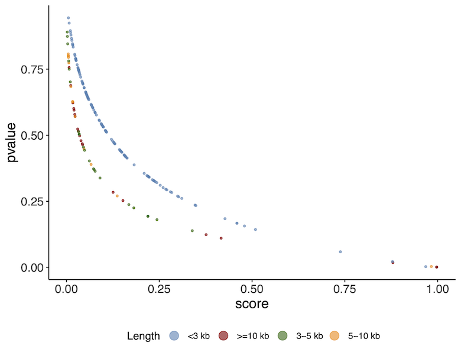
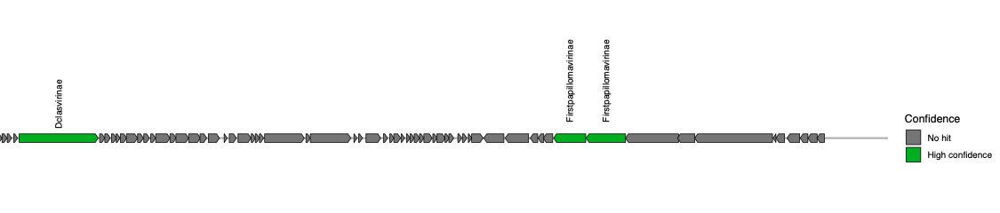

These instructions are for the course VM. To run externally please see the section at the end.
Step
To begin the practical we need to setup our docker container. Change into the virify_tutorial directory and setup the environment by running the following commands in your current terminal session:
All commands detailed below will be run from within this current working directory. Note: if there are any issues in running this tutorial, there is a separate directory exp_results/ with pre-computed results.
1. Identification of putative viral sequences
In order to retrieve putative viral sequences from a set of metagenomic contigs, we are going to use two different tools designed for this purpose, each of which employs a different strategy for viral sequence detection: VirFinder and VirSorter. VirFinder uses a prediction model based on kmer profiles trained using a reference database of viral and prokaryotic sequences. In contrast, VirSorter mainly relies on the comparison of predicted proteins with a comprehensive database of viral proteins and profile HMMs. The VIRify pipeline uses both tools as they provide complementary results:
VirFinder performs better than VirSorter for short contigs (<3kb) and includes a prediction model suitable for detecting both eukaryotic and prokaryotic viruses (phages). In addition to reporting the presence of phage contigs, VirSorter detects and reports the presence of prophage sequences (phages integrated in contigs containing their prokaryotic hosts).
Step
In the current working directory, you will find the metagenomic assembly we will be working with ERR575691_host_filtered_filt500bp_renamed.fasta.
The typical contig input will have host sequences removed and be filtered to a minimum contig length of 500bp. The contigs were also renamed, as VirSorter has trouble with longer contig names. A mapping file with the original contig names is provided ERR575691_host_filtered_filt500bp_map.tsv.
We will now filter the contigs further to keep only those that are ≥1.5 kb, by using the custom python script filter_contigs_len.py as follows:
The output from this command is a file named ERR575691_host_filtered_filt500bp_renamed_filt1500bp.fasta which is located in the obs_results directory. Our dataset is now ready to be processed for the detection of putative viral sequences. We will first analyse it with VirFinder using a custom R script and select a subset of columns from the output:
Lets look at the outputs of VirFinder. Look at the plot in the image below.
As you can see there is a relationship between the p-value and the score. A higher score or lower p-value indicates a higher likelihood of the sequence being a viral sequence. You will also notice that the results correlate with the contig length. The curves are slightly different depending on whether the contigs are > or < than 3kb. This is because VirFinder uses different machine learning models at these different levels of length.

VirFinder scores
You will see a tabular file obs_results/ERR575691_virfinder.txt that collates the results obtained for each contig from the processed FASTA file.
Step
The next step will be to analyse the metagenomic assembly using VirSorter. This can take a while to run so it has been done for you. We will copy the results to our output directory.
cp-r exp_results/virsorter_output obs_results/
If you wish to run this anytime after the practical, you will need to download the VirSorter database into the data/databases folder and then the following command can be used:
#DON'T RUN NOWwrapper_phage_contigs_sorter_iPlant.pl-f obs_results/ERR575691_host_filtered_filt500bp_renamed_filt1500bp.fasta --db 2 --wdir obs_results/virsorter_output --virome--data-dir /opt/data/databases/virsorter-data
VirSorter classifies its predictions into different confidence categories:
Category 1: “most confident” predictions
Category 2: “likely” predictions
Category 3: “possible” predictions
Categories 4-6: predicted prophages
Step
We then generate the corresponding viral sequence FASTA files using a custom python script parse_viral_pred.py as follows:
Following the execution of this command, FASTA files (*.fna) will be generated for each one of the VIRify categories mentioned above containing the corresponding putative viral sequences.
The VIRify pipeline takes the output from VirFinder and VirSorter, reporting three prediction categories:
High confidence: VirSorter phage predictions from categories 1 and 2.
Low confidence:
Contigs that VirFinder reported with p-value < 0.05 and score ≥ 0.9.
Contigs that VirFinder reported with p-value < 0.05 and score ≥ 0.7, but that are also reported by VirSorter in category 3.
Prophages: VirSorter prophage predictions categories 4 and 5.
Step
We will now restore the original contig names in the FASTA files (*fna) with using the mapping file mentioned earlier.
Once we have retrieved the putative viral sequences from the metagenomic assembly, the following step will be to analyse the proteins encoded in them in order to identify any viral taxonomic markers. To carry out this identification, we will employ a database of profile Hidden Markov Models (HMMs) built from proteins encoded in viral reference genomes. These profile HMMs were selected as viral taxonomic markers following a comprehensive random forest-based analysis carried out previously.
Step
The VIRify pipeline uses prodigal for the detection of protein coding sequences (CDSs) and hmmscan for the alignment of the encoded proteins to each of the profile HMMs stored in the aforementioned database. This takes a while to run so we’ll copy over these results too.
Once the command execution finishes two new files will be stored for each category of viral predictions. The file with the suffix faa lists the proteins encoded in the CDSs reported by prodigal, whereas the file with the suffix modified.tsv contains all significant alignments between the encoded proteins and the profile HMMs, on a per-domain-hit basis.
Step
The following command is used to parse the hmmer output and generate a new tabular file that lists alignment results in a per-query basis, which include the alignment ratio and absolute value of total E-value for each protein-profile HMM pair.
for file in$(find obs_results/ -name'*modified.tsv'-type f);dooutput_dir="$(dirname"$file")/$(basename"$file" .tsv)_informative.tsv";ratio_evalue_table.py-i${file}-o${output_dir}-t databases/additional_data_vpHMMs_v4.tsv;done
3. Viral taxonomic assignment
The final output of the VIRify pipeline includes a series of gene maps generated for each putative viral sequence and a tabular file that reports the taxonomic lineage assigned to each viral contig. The gene maps provide a convenient way of visualizing the taxonomic annotations obtained for each putative viral contig and compare the annotation results with the corresponding assigned taxonomic lineage. Taxonomic lineage assignment is carried out from the highest taxonomic rank (genus) to the lowest (order), taking all the corresponding annotations and assessing whether the most commonly reported one passes a pre-defined assignment threshold.
Step
First, we are going to generate a tabular file that lists the taxonomic annotation results obtained for each protein from the putative viral contigs. We will generate this file for the putative viral sequences in each prediction category. Run the following:
for file in$(find obs_results/ -maxdepth 1 -name'*.faa'-type f);doviral_contigs_annotation.py-p${file}-t${file%prodigal.faa}modified_informative.tsv -o${file%/*};done
Step
Next, we will take the tabular annotation files generated and use them to create the viral contig gene maps:
for file in$(find obs_results/ -name'*annotation.tsv'-type f);domake_viral_contig_map.R-t${file}-o${file%/*};done
Step
Finally, we will use the tabular annotation files again to carry out the taxonomic lineage assignment for each putative viral contig. Run the following command:
for file in$(find obs_results/ -name'*annotation.tsv'-type f);docontig_taxonomic_assign.py-i${file}-o${file%/*}-f databases/viphogs_cds_per_taxon_cummulative.csv -d databases/2022-11-01_ete3_ncbi_tax.sqlite;done
Final output results are stored in the obs_results/ directory.
The gene maps are stored per contig in individual PDF files (suffix names of the contigs indicate their level of confidence and category class obtained from VirSorter). Each protein coding sequence in the contig maps (PDFs) is coloured and labeled as high confidence (E-value < 0.1), low confidence (E-value > 0.1) or no hit, based on the matches to the HMM profiles. Do not confuse this with the high confidence or low confidence prediction of VIRify for the whole contig.
Taxonomic annotation results per classification category are stored as text in the *taxonomy.tsv files.
Step
Let’s inspect the results. Do:
cat obs_results/*taxonomy.tsv
You should see a list of 9 contigs detected as viral and their taxonomic annotation in separate columns (partitioned by taxonomic rank). However, some do not have an annotation (e.g. NODE_4… and NODE_5…).
Now on your computer on the left hand bar, select the folder icon.
Navigate to Home –> virify_tutorial –> obs_results
Open the gene map PDF files of the corresponding contigs to understand why some contigs were not assigned to a taxonomic lineage. You will see that for these cases, either there were not enough genes matching the HMMs, or there was disagreement in their assignment.

VirFinder scores
Running the practical externally
We need to set up our computing environment in order to execute the commands above. Download the virify_tutorial_2023.tar.gz file containing all the data you will need using any of the following options:
Once downloaded, extract the files from the tarball:
tar-xzvf virify_tutorial_2023.tar.gz
Now change into the virify_tutorial directory and setup the docker container by running the following commands in your terminal session:
cd virify_tutorialdocker pull quay.io/microbiome-informatics/2023-metagenomics-course-virify:1.0docker run --rm-it-v$(pwd):/opt/data quay.io/microbiome-informatics/2023-metagenomics-course-virify:1.0mkdir obs_results
The container has the following tools installed: - Python - R - VirSorter - VirFinder
All scripts and databases used can be found in the data folder.
![]()